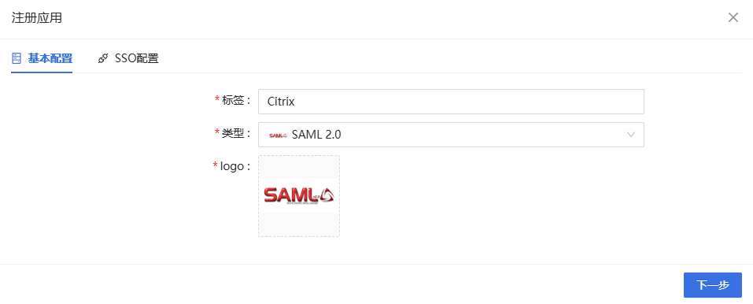
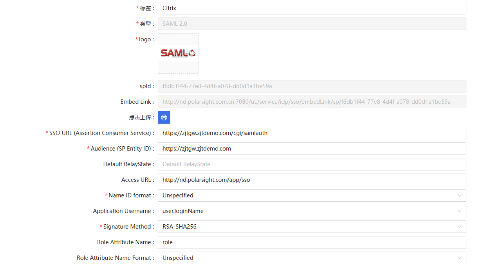
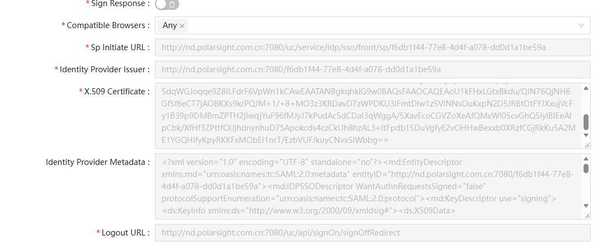
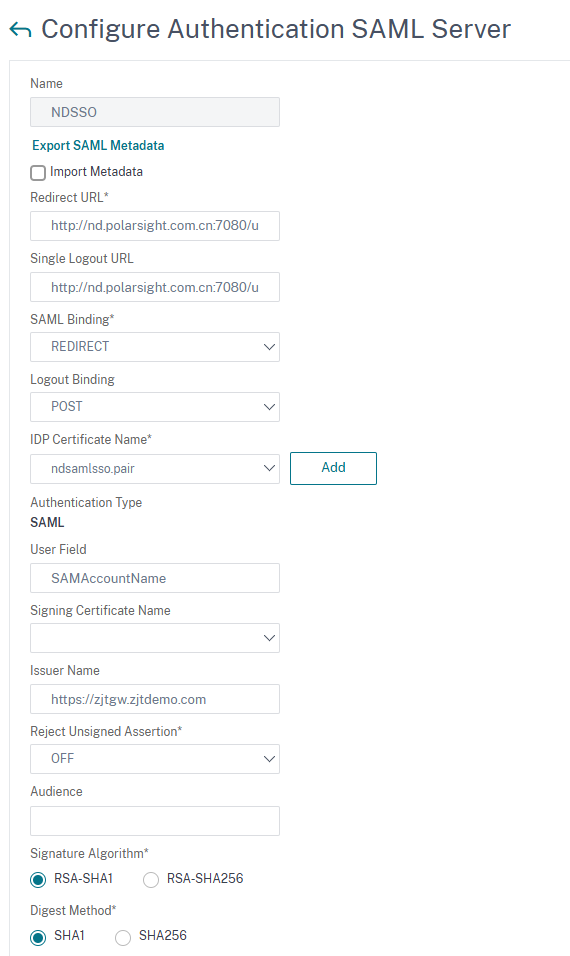
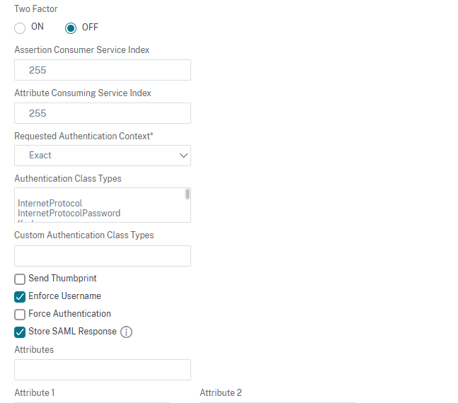
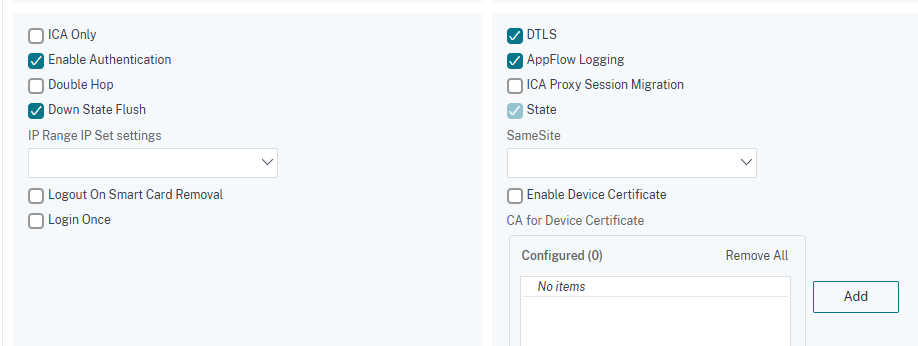
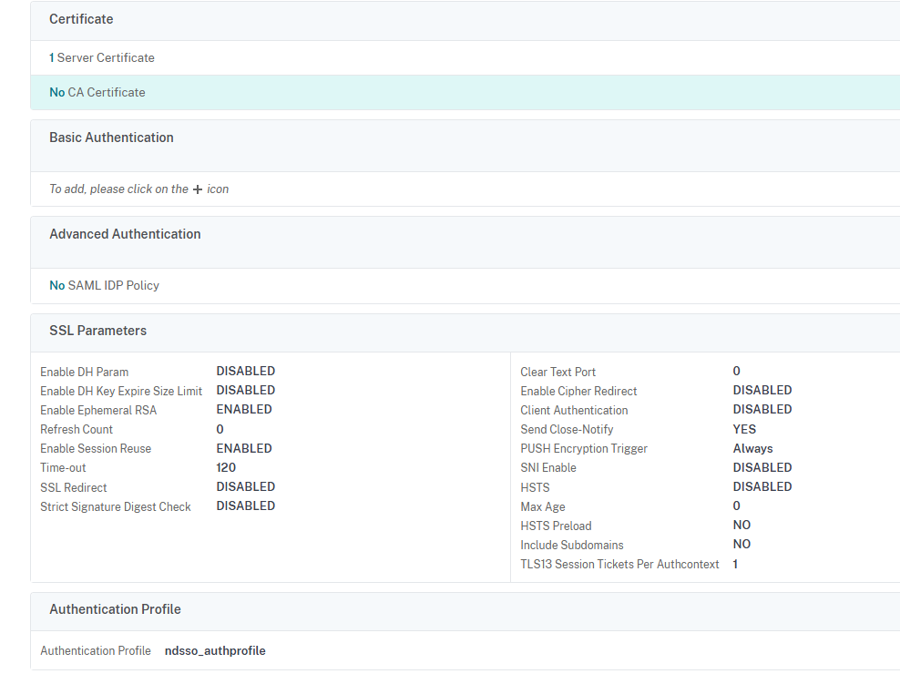
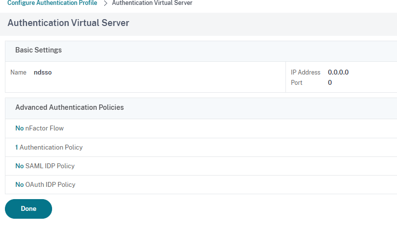
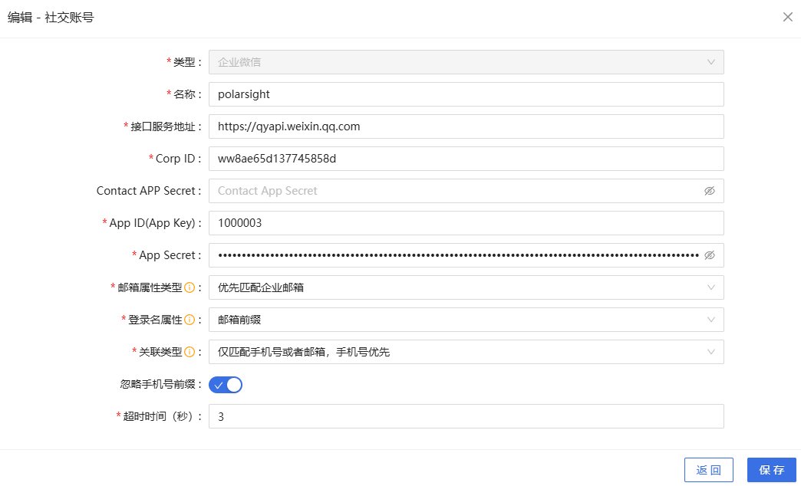

概述
本文记录以宁盾作为 SAML IdP、Citrix NetScaler（ADC）作为 SP 的 SSO 对接过程。重点是从宁盾自动生成的 IdP metadata 中提取并正确导入证书与各项 URL，避免在 NetScaler 侧出现签名校验失败或重定向错误。
一、在宁盾创建 SAML IdP 应用
在宁盾管理界面创建对应的 SAML 应用，配置完成后系统会自动生成 IdP metadata 信息。



证书复制的关键细节：X.509 Certificate 文本框中的内容必须用
Ctrl+A全选复制，不要用鼠标拖选。鼠标选择容易遗漏首尾字符或带入空白，导致导入 NetScaler 后证书无法识别。IdP metadata 的 XML 里也包含同一份证书，可作为交叉校验来源。
二、metadata 字段解析
从 IdP metadata 中可解析出以下字段，分别对应 NetScaler SAML IdP 配置的不同参数：
| metadata 字段 | 值 | NetScaler 对应参数 |
|---|---|---|
| IdP Entity ID / Issuer | http://nd.polarsight.com.cn:7080/f6db1f44-77e8-4d4f-a078-dd0d1a1be59a |
samlIdpUrl / Issuer |
| HTTP-POST SSO URL | http://nd.polarsight.com.cn:7080/uc/service/idp/sso/front/sp/f6db1f44-77e8-4d4f-a078-dd0d1a1be59a |
samlRedirectUrl |
| HTTP-Redirect SSO URL | 同上 | samlRedirectUrl |
| NameID Format | urn:oasis:names:tc:SAML:1.1:nameid-format:unspecified |
NameID 格式 |
| IdP Certificate | 见下方证书块 | samlIdPCertName |
用户访问 NetScaler 时，会被重定向到上表中的 SSO URL 去宁盾完成登录。
三、导入签名证书
在 NetScaler 上创建证书对象，名称为 idp_polar_signing_key，内容为宁盾导出的签名证书：
-----BEGIN CERTIFICATE-----
MIIC3zCCAcegAwIBAgIFAJSwwcMwDQYJKoZIhvcNAQELBQAwMDEMMAoGA1UEAwwDU1NPMRAwDgYD
VQQLDAdQcm9kdWN0MQ4wDAYDVQQKDAVOREtFWTAgFw0yNjEwMTQwOTI4NTBaGA8yMDc2MTAwMTA5
Mjg1MFowMDEMMAoGA1UEAwwDU1NPMRAwDgYDVQQLDAdQcm9kdWN0MQ4wDAYDVQQKDAVOREtFWTCC
ASIwDQYJKoZIhvcNAQEBBQADggEPADCCAQoCggEBAKhk++Uxn19cv+ayQunIgvucRustL2f9RvAA
T2rko2uOu9n1SCKA4zQXp6mqU+IVEWqgTjn3+z3cEYFuoGoxaatKZnT3OJuwnk8VCvu+GXErOfUW
SKHWDAzilB8Yj5ZALb5n66woryezz8oCu0RV1QQ6CjACwhGwnZ8Qea12/nMbNICm8hAfIiIvxT69
WBvUxA1cAIejPcuNU+6ee/ztLsjvYcaDb9WpE0ciiKTEb/CMwGaneU9H832oxAXOdnOnDKKmEsYD
BaBMRsYFtc9zzzhVJJ/PgvUbug+ynWfvacuXySgKBvSonR0Al3v7O5dqWGJoqqe9Z8ILFdrF6VpW
n1kCAwEAATANBgkqhkiG9w0BAQsFAAOCAQEAoU1kFHxLGtxBkdu/QIN76QjNH6GfSf6eCT7jAOBK
Xs9krPQJM+1/+8+MO3z3KRDavD7zWPDKU3IFmtDIw1zSVlNNsOuKxpN2D5JRBtOtFYJXxujVcFy1
B39p9DMBmZPTH2jIwqjYuF96fMJyJ7kPudAc5dCDaI3qWggA/5XavEcoCGVZoXeAfQMxWI05cvGh
Q5iyiBIEeAlpCbk/XfHf3ZPttfOlJjhdnynhuD7SApokcds4czCkUh8hzAL3+ItFpdb1SDuVgfyE
2vOHHwBexxb0XRzfCGjRkKu5A2ME1YGQHifyKpyRKKFxMObEI1ncT/EzbVUFJkuyCNvx5lWbbg==
-----END CERTIFICATE-----
四、创建 SAML 认证策略
通过 NetScaler CLI 创建 SAML Action：
add authentication samlAction saml_action_polarsight \
-samlIdPCertName idp_polar_signing_key \
-samlRedirectUrl "http://nd.polarsight.com.cn:7080/uc/service/idp/sso/front/sp/f6db1f44-77e8-4d4f-a078-dd0d1a1be59a" \
-samlUserField userPrincipalName \
-samlIssuerName "https://" \
-logoutURL "http://nd.polarsight.com.cn:7080/uc/api/signOn/signOffRedirect" \
-samlBinding REDIRECT \
-samlIdpUrl "http://nd.polarsight.com.cn:7080/f6db1f44-77e8-4d4f-a078-dd0d1a1be59a" \
-rejectUnsignedAssertion OFF
参数说明：
samlUserField userPrincipalName：指定用 Assertion 中的哪个属性作为登录用户名。samlBinding REDIRECT：认证请求通过 HTTP-Redirect 绑定发送。rejectUnsignedAssertion OFF：允许未签名的 Assertion（宁盾默认场景需要；如已启用签名，建议改为 ON 以提升安全性）。logoutURL：宁盾侧的单点登出地址。


五、Gateway 中配置
把认证策略绑定到对应的 Gateway 虚拟服务器，在「Authentication」→「SAML」中选择刚才创建的 saml_action_polarsight。



配置完成后效果如下：

六、排障要点
| 现象 | 检查点 |
|---|---|
| 证书导入后不识别 | 是否用 Ctrl+A 全选复制，证书首尾行是否完整 |
| Assertion 校验失败 | samlIdPCertName 是否绑定正确证书；证书是否过期 |
| 重定向到错误地址 | samlRedirectUrl 与 metadata 中的 SSO URL 是否一致 |
| 用户名映射为空 | samlUserField 与宁盾返回的 Assertion 属性是否匹配 |
| 单点登出无效 | logoutURL 是否正确，宁盾侧是否配置登出回调 |
演示视频
宁盾 + NetScaler SAML 单点登录流程演示
企业微信扫码登录流程演示
本文由 WorkBuddy AI 编辑整理。